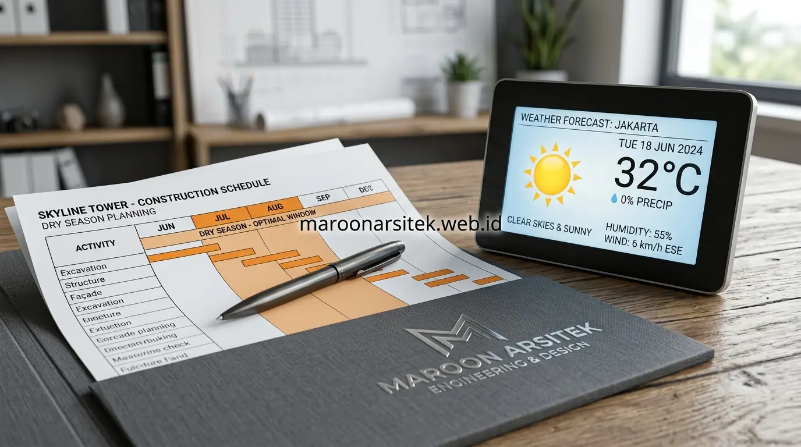

Selain efisiensi pada tahap desain dan pemilihan material struktural, cara menghemat biaya bangun rumah juga dapat dicapai melalui strategi pembelian material yang cerdas dan pengaturan jadwal konstruksi yang tepat, tanpa mengorbankan standar keamanan struktur bangunan. Maroon Arsitek membantu menerapkan strategi tambahan ini untuk melengkapi upaya efisiensi anggaran secara menyeluruh melalui layanan jasa kontraktor rumah profesional.
Banyak potensi penghematan justru berasal dari aspek pengelolaan pembelian dan waktu yang sering luput dari perhatian, padahal kedua aspek ini dapat memberikan dampak signifikan terhadap total anggaran tanpa memengaruhi kualitas struktural. Berikut tujuh cara tambahan yang dapat diterapkan sesuai tahapan pembelian dan pelaksanaan proyek pembangunan rumah idaman Anda.
Efisiensi pada Tahap Pembelian Material Konstruksi
Efisiensi pada tahap pembelian material memberikan dampak langsung terhadap total anggaran, karena strategi pembelian yang tepat dapat menekan biaya tanpa mengubah spesifikasi material yang telah direncanakan. Berikut cara efisiensi yang dapat diterapkan pada tahap ini:
- Membeli material dalam volume besar sekaligus untuk mendapatkan harga grosir: Terutama untuk material dengan kebutuhan volume tinggi seperti semen, pasir pasang, bata ringan, dan besi struktur.
- Memanfaatkan sisa material secara optimal antar tahap pekerjaan: Mengurangi jumlah material terbuang yang sebenarnya masih dapat digunakan untuk bagian lain proyek, misalnya potongan besi untuk tulangan praktis atau sisa bata untuk pasangan rolaag.
- Membandingkan penawaran dari beberapa pemasok sebelum membeli: Memastikan harga yang diperoleh kompetitif tanpa mengorbankan kualitas material yang dibutuhkan.
Strategi pembelian yang cermat ini dapat memberikan penghematan signifikan tanpa mengubah spesifikasi teknis yang telah ditetapkan sesuai kebutuhan struktural bangunan.
Pemanfaatan Volume Grosir dan Pengendalian Limbah Konstruksi
Pembelian material struktural secara kolektif langsung dari distributor utama memangkas rantai distribusi eceran, sehingga harga satuan yang didapatkan jauh lebih rendah. Selain harga grosir, banyak supplier memberikan fasilitas pengiriman gratis ke lokasi proyek yang turut mengurangi biaya logistik operasional.
Pengendalian limbah konstruksi (waste management) yang ketat di bawah supervisi mandor berpengalaman memastikan setiap batang besi beton dan sak semen terpakai sesuai perhitungan teknis, mencegah pemborosan dana akibat material tercecer atau rusak akibat penyimpanan yang tidak tepat.
Efisiensi pada Pemilihan Metode Konstruksi
Pemilihan metode konstruksi yang tepat turut memengaruhi efisiensi biaya, terutama terkait kecepatan pengerjaan dan potensi pengerjaan ulang yang dapat dihindari melalui perencanaan yang matang sejak awal. Berikut cara yang dapat diterapkan pada tahap ini:
- Memilih metode konstruksi pracetak untuk elemen tertentu: Seperti komponen struktur tertentu, plat lantai pracetak, atau saluran drainase yang dapat difabrikasi sebelumnya untuk mempercepat waktu pengerjaan di lokasi proyek.
- Menghindari perubahan desain di tengah proyek yang memicu pekerjaan ulang: Karena setiap perubahan setelah pekerjaan berjalan berpotensi menambah biaya material dan tenaga kerja yang sangat signifikan.
Kedua langkah ini membantu menjaga efisiensi waktu dan biaya melalui pemilihan metode kerja yang tepat serta konsistensi terhadap rencana yang telah disepakati sejak awal proyek.

Keunggulan Komponen Pracetak dan Konsistensi Desain
Penggunaan komponen pracetak (precast) terbukti memangkas waktu konstruksi bekisting basah hingga 30%. Semakin cepat waktu pengerjaan struktur di lapangan, semakin hemat pula akumulasi upah tukang harian dan biaya sewa perancah besi (scaffolding).
Selain itu, komitmen teguh untuk tidak mengubah denah maupun posisi instalasi saat fisik bangunan sudah berdiri menjadi kunci utama kepastian anggaran. Revisi mendadak di lapangan sering kali menuntut pembongkaran dinding atau cor beton yang memicu pemborosan ganda.
Efisiensi pada Pengaturan Waktu Pembangunan Rumah
Pengaturan waktu pembangunan yang tepat dapat mengurangi risiko keterlambatan dan biaya tambahan akibat kondisi yang tidak mendukung proses konstruksi berjalan optimal. Berikut cara yang dapat diterapkan pada tahap ini:
- Membangun di luar musim hujan: Menghindari perlambatan kerja pada tahap galian pondasi, struktur utama, dan pekerjaan dinding luar yang sangat sensitif terhadap kondisi cuaca basah.
- Menjadwalkan pembelian material sesuai kebutuhan tahap pekerjaan: Mencegah biaya penyimpanan berlebih maupun risiko kerusakan material seperti semen membatu akibat penyimpanan terlalu lama sebelum digunakan.
Pengaturan waktu yang mempertimbangkan faktor cuaca dan kebutuhan material per tahap membantu menjaga kelancaran proyek sekaligus menghindari biaya tambahan akibat kendala yang sebenarnya dapat diantisipasi sejak perencanaan awal.
Penyusunan Linimasa Pengadaan Material Bertahap
Metode pengadaan Just-in-Time (JIT) memastikan material tiba di lokasi proyek persis saat tahapan pekerjaan bersangkutan akan dimulai. Hal ini tidak hanya membebaskan ruang kerja tukang di lahan terbatas, tetapi juga melindungi kualitas material sensitif seperti semen, kayu rangka, dan gipsum dari kelembapan tanah atau tempias air hujan.
Dengan memetakan jadwal pekerjaan kasar di musim kemarau dan menyisihkan pekerjaan interior kering di musim basah, laju pembangunan dapat berjalan stabil tanpa jeda operasional yang merugikan pemilik rumah.